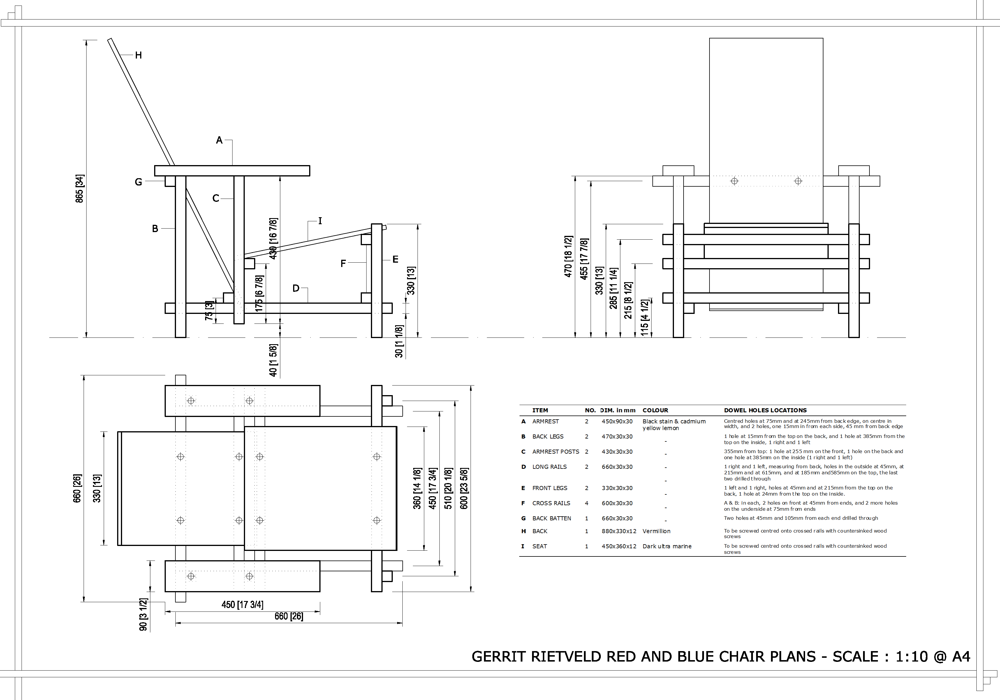
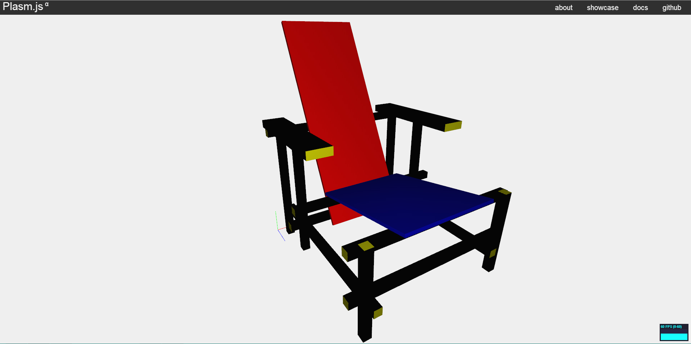
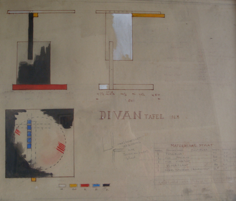
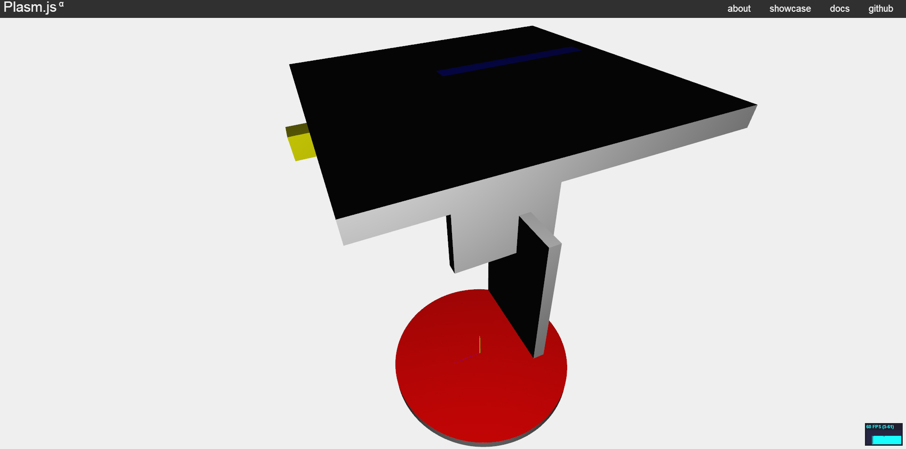
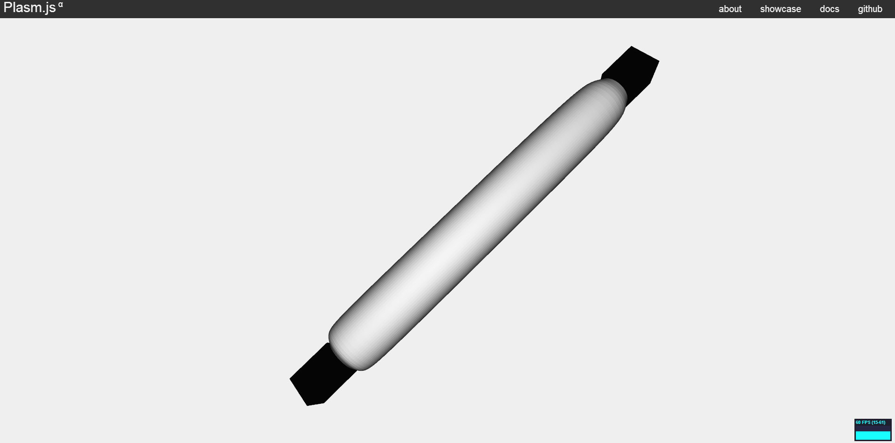
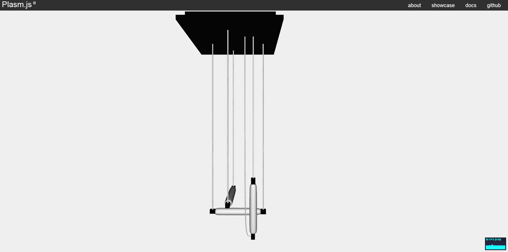
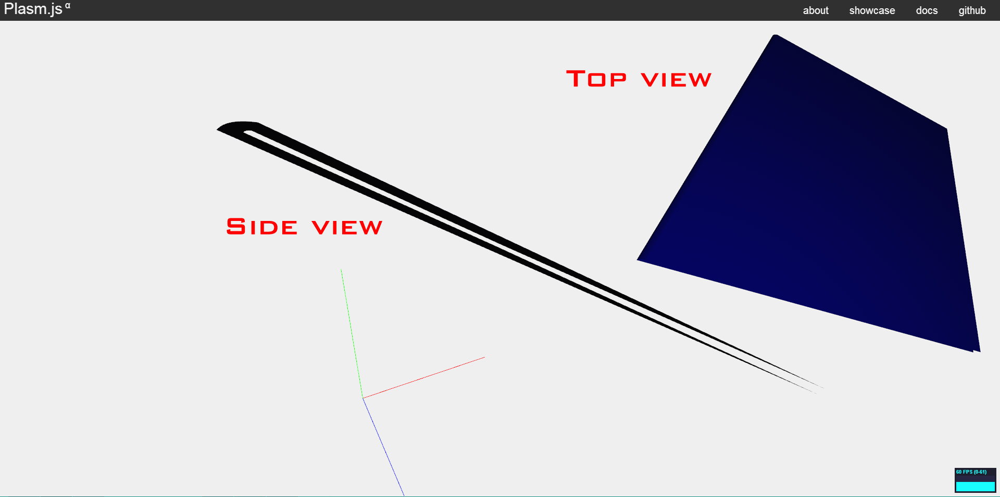
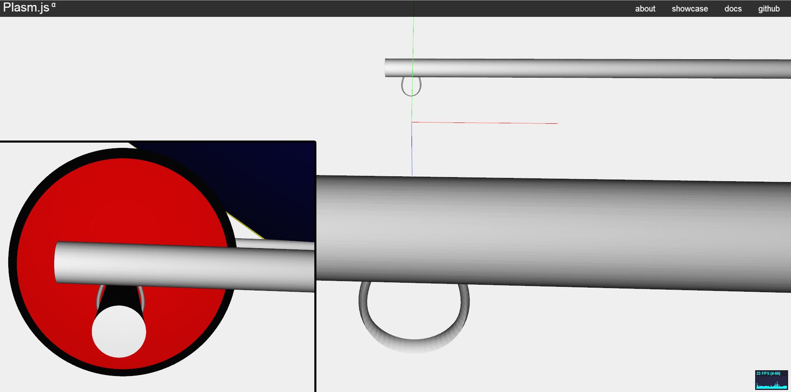
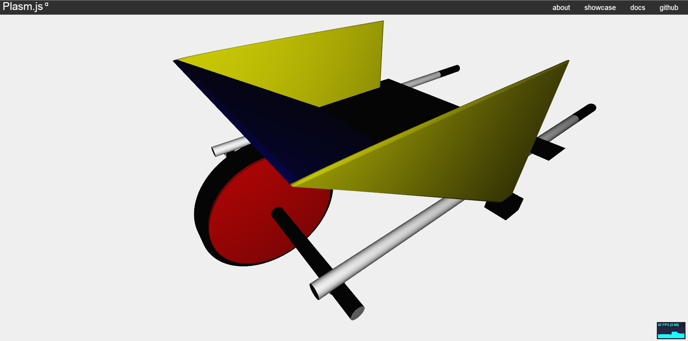

The Project
This page presents my final project for the Computational Graphics course of RomaTre University (2012-2013). The project consists in the 3D modeling of some furnitures of a modern architect using the Plasm.js package. The architect chosen for this project is Gerrit Rietveld and the furnitures modeled are four of his most famous works:
Gerrit Rietveld

Rietveld was born in Utrecht, Netherlands in 1888 as the son of a joiner. He left school at 11 to be apprenticed to his father and enrolled at night school before working as a draughtsman for C. J. Begeer, a jeweller in Utrecht, from 1906 to 1911. By the time he opened his own furniture workshop in 1917, Rietveld had taught himself drawing, painting and model-making. He afterwards set up in business as a cabinet-maker.
Rietveld designed his famous Red and Blue Chair in 1917. Hoping that much of his furniture would eventually be mass-produced rather than handcrafted, Rietveld aimed for simplicity in construction. In 1918, he started his own furniture factory, and changed the chair's colors after becoming influenced by the 'De Stijl' movement, of which he became a member in 1919, the same year in which he became an architect. The contacts that he made at De Stijl gave him the opportunity to exhibit abroad as well. In 1923, Walter Gropius invited Rietveld to exhibit at the Bauhaus. He designed his first building, the Rietveld Schröder House, in 1924, in close collaboration with the owner Truus Schröder-Schräder. Built in Utrecht on the Prins Hendriklaan 50, the house has a conventional ground floor, but is radical on the top floor, lacking fixed walls but instead relying on sliding walls to create and change living spaces. The design seems like a three-dimensional realization of a Mondrian painting. The house has been a UNESCO World Heritage Site since 2000. His involvement in the Schröder House exerted a strong influence on Truus' daughter, Han Schröder, who became one of the first female architects in the Netherlands.
Rietveld broke with 'De Stijl' in 1928 and became associated with a more functionalist style of architecture, known as either Nieuwe Zakelijkheid or Nieuwe Bouwen. The same year he joined the Congrès Internationaux d'Architecture Moderne. From the late 1920s he was concerned with social housing, inexpensive production methods, new materials, prefabrication and standardisation. In 1927 he was already experimenting with prefabricated concrete slabs, a very unusual material at that time. In the 1920s and 1930s, however, all his commissions came from private individuals, and it was not until the 1950s that he was able to put his progressive ideas about social housing into practice, in projects in Utrecht and Reeuwijk.
Rietveld designed the Zig-Zag Chair in 1934 and started the design of the Van Gogh Museum in Amsterdam, which was finished after his death.
In 1951 Rietveld designed a retrospective exhibition about De Stijl which was held in Amsterdam, Venice and New York. Interest in his work revived as a result. In subsequent years he was given many prestigious commissions, including the Dutch pavilion for the Venice Biennale (1953), the art academies in Amsterdam and Arnhem, and the press room for the UNESCO building in Paris. Designed for the display of small sculptures at the Third International Sculpture Exhibition in Arnhem’s Sonsbeek Park in 1955, Rietveld's ‘Sonsbeek Pavilion’ was rebuilt with new materials at the Kröller-Müller Museum in 2010. In order to handle all these projects, in 1961 Rietveld set up a partnership with the architects Johan Van Dillen and J. Van Tricht built hundreds of homes, many of them in the city of Utrecht.
His work was neglected when rationalism came into vogue, but he later benefited from a revival of the style of the 1920s thirty years later.[1]
The Red and Blue Chair

The Red and Blue Chair is a chair designed in 1917 by Gerrit Rietveld. It represents one of the first explorations by the De Stijl art movement in three dimensions. The original chair was constructed of unstained beech wood and was not painted until the early 1920s. Fellow member of De Stijl and architect, Bart van der Leck, saw his original model and suggested that he add bright colours. He built the new model of thinner wood and painted it entirely black with areas of primary colors attributed to De Stijl movement. The effect of this color scheme made the chair seem to almost disappear against the black walls and floor of the Schröder house where it was placed. The areas of color appeared to float, giving it an almost transparent structure. The Museum of Modern Art, which houses the chair in its permanent collection, a gift from Philip Johnson, states that the red, blue,and yellow colors were added around 1923. The chair also resides at the High Museum of Art, Atlanta. It features several Rietveld joints. The Red and Blue Chair was reported to be on loan to the Delft University of Technology Faculty of Architecture as part of an exhibition. On May 13, 2008, a fire destroyed the entire building, but the Red and Blue Chair was saved by firefighters. As of 2012, it resides in the Minneapolis Institute of Arts in Minneapolis, Minnesota.[2]
Coding
This model is a great example that shows how simple can modeling be using the PLaSM Module. It was necessary at the beginning to make a sketch or finding a blueprint of the furniture for measuring all the chair parts so that later they could be easily made and positioned.  The main function used for this model is the CUBOID function, from the plasm.js package, since all the parts of the chair have a rectangular form. The structure of the code is very basic: firstly all the parts of the chair are made and only after they are placed accordingly using the basic functions of translation and rotation of an object. Here is a screenshot of the finished work: 
The Schröder Table

The Schröder Table was designed specifically for Rietveld’s most important architectural commission – the Schröder House in Utrecht. The Schröder Table is a magnificent pastiche of the prevailing De Stijl color theories and Cubism – an assemblage of vertical and horizontal planes. As Rietveld has applied the iconic color palette to his earlier Red/Blue Chair design, the Schröder Table was also executed in a similar palette of red, blue, yellow, and black along with the noticeable addition of white – the single color that differs from the Red/Blue Chair. Like Rietveld’s Red/Blue Chair, the Schröder Table also blurs the boundaries of fine art and industrial design, functioning on an extraordinarily sculptural level in any interior that it is placed. Examples of the table are included in the permanent collections of several museums worldwide including New York’s Museum of Modern Art. Cassina acquired the rights to produce Rietveld’s furniture in 1971 and reissued the Schröder Table in 1981.[3]
Coding
The following image was necessary for the knowledge of all the table's components and their placements:
The main strategy used for modeling this table was to make the horizontal and vertical surface faces of each object and then duplicating and translating them to give the 3D aspect. This way it is possible to assign the different colors for the face and borders of the same object. In order to do this, the BEZIER function, from the plasm.js package, was used in S0 and S1. Here is an example showing how the lower section of the table was made:
//Lower Section var lowerSectionHeight = 5.5; var lowerSectionLength = 3.5; var lowerSectionWidth = 0.4; var lc0 = BEZIER(S0)([[0,0,0],[lowerSectionLength,0,0]]); var lc1 = BEZIER(S0)([[0,lowerSectionHeight,0],[lowerSectionLength,lowerSectionHeight,0]]); var lowerBackBezier = MAP(BEZIER(S1)([lc0,lc1]))(domain2D); var lowerBack = COLOR(blackColor)(T([0,1,2])([-2.53,-0.3,-2])(lowerBackBezier)); var lowerFront = T([0,1,2])([0,0,lowerSectionWidth])(lowerBack); var lc2 = BEZIER(S0)([[0,0,0],[0,0,lowerSectionWidth]]); var lc3 = BEZIER(S0)([[0,lowerSectionHeight,0],[0,lowerSectionHeight,lowerSectionWidth]]); var lowerBackFillingBezier = MAP(BEZIER(S1)([lc2,lc3]))(domain2D); var lowerBackFilling = COLOR(whiteColor)(T([0,1,2])([-2.53,-0.3,-2])(lowerBackFillingBezier)); var lowerFrontFilling = T([0,1,2])([lowerSectionLength,0,0])(lowerBackFilling); var lc4 = BEZIER(S0)([[0,0,0],[0,0,lowerSectionWidth]]); var lc5 = BEZIER(S0)([[lowerSectionLength,0,0],[lowerSectionLength,0,lowerSectionWidth]]); var lowerBottomFillingBezier = MAP(BEZIER(S1)([lc4,lc5]))(domain2D); var lowerBottomFilling = COLOR(whiteColor)(T([0,1,2])([-2.53,-0.3,-2])(lowerBottomFillingBezier)); var lowerTopFilling = T([0,1,2])([0,lowerSectionHeight,0])(lowerBottomFilling); var lowerSection = STRUCT([lowerBack, lowerFront, lowerBackFilling, lowerFrontFilling, lowerBottomFilling, lowerTopFilling]);Here is a screenshot of the finished work: 
The Hanging Lamp

Gerrit Rietveld designed this iconic hanging lamp around 1922 for Dr Hartog who lived near Utrecht. It hung over his office desk until the interior was completely destroyed in 1939. Created while Rietveld was a member of the De Stijl group, the clean undecorated lines and simplified palette perfectly reflect the modern aesthetics of the group, in sharp contrast to the flowing lines of the Art Nouveau style before WW1. In this lamp, Rietveld stripped the fixture down to its essential of four lighting tubes and wires, and then reconstructed it into a three-dimensional hanging light sculpture. A true icon of 20th century Modernist design, it looks astonishingly modern today as it did when it was created. There are two original versions of this hanging lamp in the Utrecht Central Museum and the Amsterdam Museum of Modern and Contemporary Art.[4]
Coding
The pieces that required more attention in this model were the lamp tubes. The function lampCreator() generates one tube lamp, so this function is called three times to generate three tube lamps which will then be positioned and rotated accordingly to the entire model. In order to make the shape of the tube lamp, the ROTATIONAL_SURFACE function from the plasm.js package was used. Here is a screenshot of a zoomed tube lamp generated by the lampCreator() function:
Here is the code of the lampCreator() function:
var lampCreator = function(){
var domain = DOMAIN([[0,1],[0,2*PI]])([40,80]);
var connector1 = COLOR(blackColor)(T([0,1,2])([-0.11,0,-0.11])(CUBOID([0.22,0.3,0.22])));
var connector2 = COLOR(blackColor)(T([0,1,2])([-0.11,-2.8,-0.11])(CUBOID([0.2,0.3,0.2])));
var c0 = BEZIER(S0)([[0.12, 0, 0], [0.16, 0, -0.08], [0.19, 0, -0.11], [0.19, 0, -0.13], [0.19, 0, -0.5], [0.19, 0, -1], [0.19, 0, -1.5], [0.19, 0, -2], [0.19, 0, -2.4], [0.19, 0, -2.42], [0.19, 0, -2.47], [0.16, 0, -2.47], [0.12, 0, -2.5],]);
var mapping = ROTATIONAL_SURFACE(c0);
var lamp = COLOR(whiteColor)(MAP(mapping)(domain));
var model = STRUCT([connector1, connector2, R([1,2])([-PI/2])(lamp)]);
return model;
};
Here is a screenshot of the finished work:

The Child's Wheelbarrow

Coding
The strategy used for this model is similar to the Schröder Table one, but unlike there where the borders are flat in this piece the borders are curved. In order to do this the flat faces are united by a curved surface done with the BEZIER function, from the plasm.js package, applied to two straight lines and 1 curved line. Here is a screenshot example that shows the same piece (the blue diagonal board) viewed from two different angles:
Here is the code that makes the diagonal board of the previous screenshot:
//Diagonal Board var dbc0 = BEZIER(S0)([[-0.41,1.9,1.9],[-0.41,1.9,-1.9]]); var dbc1 = BEZIER(S0)([[2.16,0.31,1.9],[2.16,0.31,-1.9]]); var dBoardA = MAP(BEZIER(S1)([dbc0, dbc1]))(domain2D); var dBoardB = T([0,1,2])([0.07,0.01,0])(dBoardA); var dbcTop1 = BEZIER(S0)([[-0.41,1.9,1.9],[-0.41,1.9,-1.9]]); var dbcTop2 = BEZIER(S0)([[-0.39,1.92,1.9],[-0.39,1.92,-1.9]]); var dbcTop3 = BEZIER(S0)([[-0.34,1.91,1.9],[-0.34,1.91,-1.9]]); var dbTopBezier = MAP(BEZIER(S1)([dbcTop1, dbcTop2, dbcTop3]))(domain2D); var boardDiagonal = COLOR(blueColor)(T([0,1,2])([0,0,0])(STRUCT([dBoardA, dBoardB, dbTopBezier])));Here is a screenshot showing some small details:  Here is a screenshot of the finished work: 